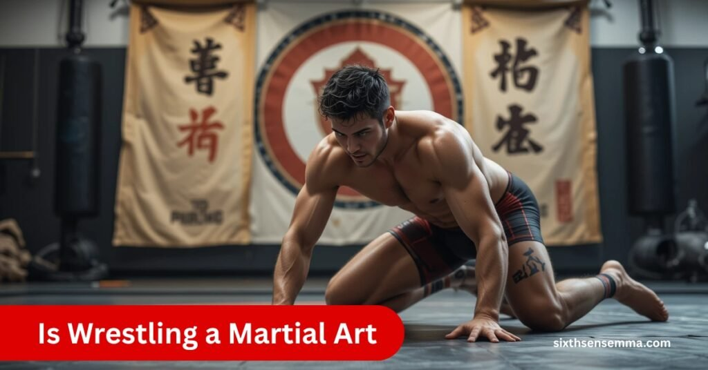
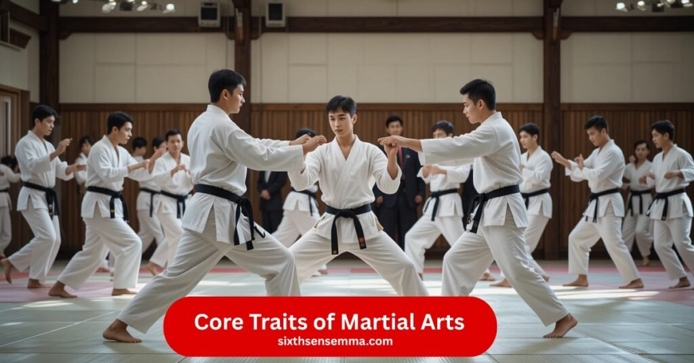
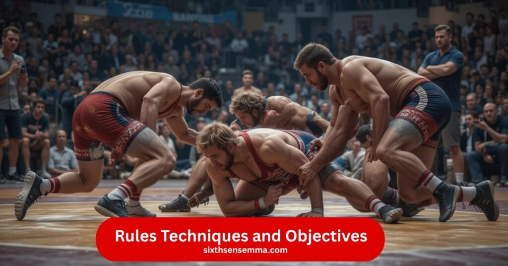

Is Wrestling Just a Sport or a Real Martial Art Too

Sixth Sense MMA believes a combat sport becomes a martial art when it offers more than just physical engagement. It’s not only about fighting, but also about discipline, respect, and self-growth. A martial art teaches more than just techniques it teaches discipline, control, and purpose.
While all martial arts involve combat, not all combat sports focus on values, philosophy, or deeper meaning. The shift from sport to art happens when a system is built on technique, discipline, and mental growth along with physical strength. So, what makes it more than a game? Discipline, structure, and purpose.
About Sixth Sense MMA
Sixth Sense MMA, we’re more than just a training facility, we’re a home for those who want to grow in both body and mind. Our programs focus on building discipline, control, and personal development through wrestling, MMA, and traditional martial arts like judo and boxing. Whether you’re a beginner or an experienced athlete, our structured system helps you unlock your full potential in a focused, respectful environment.
Core Traits of Martial Arts (Discipline, Defense, Philosophy
Is Wrestling a Martial Art like karate judo and taekwondo were created not just for combat but to help people build character develop self,control and find inner peace. These systems teach precise techniques promote respect and require a balanced mind body and attitude.
Instructors play an important role in shaping a student’s path guiding them through a complete training that involves both physical power and personal development. Unlike brute strength alone martial arts focus on discipline focus and responsible action.
Whether practiced for self, defense or as a way to grow spiritually they offer a structured system where values like control respect and consistent effort are equally important. This philosophy makes martial arts a powerful tool for self, growth and a more peaceful way of life.

| Trait | Description |
|---|---|
| Discipline | Builds character, encourages responsible action, and promotes consistent effort |
| Self-Control | Develops control over emotions and physical responses |
| Defense | Focuses on self-defense rather than aggression or brute strength |
| Philosophy | Encourages spiritual growth, peace, and ethical behavior |
| Respect | Teaches respect for instructors, opponents, and the learning process |
| Balance | Emphasizes harmony between mind, body, and attitude |
| Technique | Involves precise physical movements and mastery of skills |
| Personal Growth | Guides students toward physical power and personal development |
Physical vs Mental Components in Traditional Systems
In traditional martial arts like judo or boxing, both physical and mental growth are key parts of the system. These arts teach discipline, respect, and self-control, going beyond just fighting or winning a game. Wrestling may seem simple,
but it also includes combat skills and a strong focus on techniques. It’s rooted in a structured path that carries deep values and real purpose. I’ve seen how wrestling builds personal strength, both in mma and life. That’s what makes it a true part of the martial arts world.
Benefits of Training with Sixth Sense MMA
Training at Sixth Sense MMA offers more than just physical conditioning—it cultivates personal growth, self-control, and mental strength. Whether you’re learning wrestling, MMA, or traditional martial arts,
our approach is built around the core values of discipline, respect, and focused development. Athletes not only gain practical self-defense skills and improved fitness but also develop character, balance, and inner confidence that carry over into everyday life. Our structured environment empowers individuals at all levels to push their limits and achieve holistic progress.
The World of Wrestling
In traditional martial arts like judo or boxing, both physical strength and mental discipline are key. These arts teach self–control, respect,
and a deeper purpose beyond just fighting or winning. Wrestling may seem simple, but it includes powerful techniques, combat focus, and a structured system. From my mma training, I’ve seen how it carries strong values and true personal growth making it a real part of the martial arts
History and Evolution of Wrestling
In traditional martial arts like judo and boxing, both physical strength and mental focus matter. These systems are built to teach discipline, self,control, and deep values that go beyond just fighting. Wrestling may look simple, but it includes powerful techniques and a clear purpose.
From my time in mma, I saw how it carries strong self, defense skills and real personal growth. It’s not just a sport; it’s a part of the martial arts world. Wrestling’s structured style, rooted in competition, proves how combat and character go hand in hand.
Wrestling Styles Around the World
Wrestling takes many forms across the globe, each shaped by local traditions and techniques. Freestyle and Greco, Roman are two of the most recognized Olympic styles, freestyle allows leg attacks, while Greco, Roman focuses on upper, body throws. In South Asia, kushti is a traditional form practiced in mud pits, blending physical training with cultural rituals. Japan is home to sumo wrestling, where size, balance Table
| Wrestling Style | Region | Key Features | Cultural Context |
|---|---|---|---|
| Freestyle | Global (Olympic) | Allows leg attacks, takedowns, and pins | Competitive, sport,focused |
| Greco-Roman | Global (Olympic) | Upper,body throws, no leg attacks | Emphasizes technique and control |
| Kushti | South Asia | Grappling in mud pits, physical training | Blends cultural rituals, traditional |
| Sumo | Japan | Size, balance, and strategy; push-out focus | Deeply tied to Shinto rituals |
| Laamb | Senegal | Grappling with strikes, festive events | Community-based, celebratory |
Rules Techniques and Objectives
In my experience training across different styles like Greco, Roman and freestyle, wrestling stands out for its clear structure, firm rules, and intense competition. Each match is governed to ensure fairness, safety, and a skill, based environment.
The main objective is to gain control over the opponent often by pinning their shoulders to the mat or scoring points through takedowns, escapes, and holds. Techniques like throws, clinches, and groundwork are part of every match, with proper execution and timing playing a key role in gaining superiority.
What I admire most is how wrestling discourages illegal moves such as joint locks or strikes, keeping the focus on clean techniques and sportsmanship. Each move is timed and measured to help athletes outmaneuver their rivals with strength and smart strategy.
Wrestling also includes timed matches, where victory can come by points, a pin, or even technical dominance. This strong focus on discipline and controlled aggression creates an environment where athletes are shaped not just by power, but by skill, respect, and precision making wrestling a true part of the martial art world.

Wrestling vs Martial Arts The Comparison
In traditional martial arts like judo and boxing, both physical strength and mental discipline are important. These systems are built to teach self–control, respect, and values that go beyond the sport.
Wrestling may look simple, but it includes solid techniques, strong focus, and real personal growth. From my mma training, I’ve seen how wrestling carries deep purpose and is truly a part of the martial arts world.
Wrestling’s Combat Nature
Wrestling is a physically demanding combat sport that emphasizes control balance and raw strength. It’s a form of hand to hand contact that requires sharpness precision and strategic focus. Unlike martial arts involving weapons or strikes wrestling relies on grappling submissions and leverage to take down an opponent. Each move reflects the pure essence of physical and mental dominance using technique and timing rather than brute force.
Though it may seem simple the nature of wrestling is intense and direct making it a deep and disciplined practice. With no need for weapons it involves body,to,body control and endurance under strict rules. This form of combat highlights the use of the body in its purest form relying on both physical power and mental sharpness to overpower the opponent.
Lack of Weapon Training or Philosophy?
Wrestling unlike traditional martial arts does not include weapon training or follow a deep-rooted philosophical system. While arts like kendo kung fu and aikido emphasize spiritual balance ethical teachings and moral codes wrestling is grounded in physical grappling techniques and competitive performance.
This sport focuses on strength control and strategy rather than meditation or broader spiritual values. It follows a different path centered around mastery of movement and personal discipline. Though respected as a powerful form of combat it is often seen as a sport that teaches physical dominance rather than a framework built on ethical or spiritual development.
Where Wrestling Fits in the Martial Arts Spectrum
Wrestling holds a distinct place within the broad spectrum of martial arts. Unlike traditional systems that focus on striking, philosophy, or weaponry, wrestling emphasizes physical dominance through grappling, control, and technique. It shares core values like discipline, conditioning, and skill mastery, aligning it with other martial disciplines.
While it may not involve ancient rituals or spiritual teachings, wrestling’s combative nature and real,world effectiveness make it an essential part of modern martial arts training. Its influence is especially evident in mixed martial arts, where grappling often determines the outcome of a fight.
Wrestling in the Modern Fight Scene
Wrestling plays a major role in the world of combat sports and remains a powerful base in mixed martial arts. It’s a no-nonsense effective approach that gives fighters control balance and takedown ability which are crucial in both standing and ground situations.
Wrestling teaches endurance mental toughness and pressure handling all of which are key in high-level competition. Many UFC and Olympic fighters have a background in wrestling because its fundamentals continue to shape today’s modern MMA scene. From local gyms to top mats wrestling is where they can train with purpose and decide any fight with skill and control.
Wrestling’s Role in MMA and UFC
Wrestling is one of the strongest foundations for success in MMA and the UFC. Wrestlers like Khabib Nurmagomedov Daniel Cormier and Jon Jones used their skill to dominate fights whether standing or on the ground. It’s not just about takedowns but about control pressure and the ability to escape or neutralize striking and submissions.
Wrestling helps fighters stay dominant dictate the pace and land clean shots making it hard for opponents to execute their game plan. All champions know that where the fight happens is critical and wrestling gives them the power to take over with precision and strength.
Wrestling vs Sambo Technical Comparison
In my years of training, I’ve seen clear similarities between wrestling and Sambo, especially in their grappling, throws, and takedowns. But the technique, purpose, and setting often set them apart. Wrestling is purely focused on pins, control, and dominance without strikes, submissions, or leg locks. On the other hand, Combat Sambo includes striking, submission techniques, and a mix of judo, jiu, jitsu, and even military elements, making it more versatile for real, world combat.
While both styles are effective in MMA and other competitive sports, wrestling often excels in positioning and applying pressure. It’s known for its simplicity, sharp focus, and making the most of hand control in every move. I personally found wrestling easier to adapt when learning other styles, and many fighters choose it as a favorite base because of how well it transitions into different settings. Sambo may add more tools, but wrestling makes the core game stronger.
How Wrestling Enhances Football, BJJ & More
Wrestling teaches physical and mental qualities which benefit athletes in many sports like football rugby hockey and even Brazilian jiu,jitsu. It improves balance leverage hand fighting and body awareness making it one of the best tools for overall athletic development. Wrestlers gain offensive and defensive skills that translate well for linemen in football or top control in BJJ.
The sport also builds conditioning toughness focus and discipline which are often key in high,pressure situations. Wrestling gives players grit and makes them stronger on the mat and in any crossover sport where power and control matter.
Why Sixth Sense MMA Stands Out
Sixth Sense MMA believe in teaching with purpose, not just for competition, but for life. Our expert coaches focus on both physical techniques and mental growth, guiding each student with care.
With a blend of traditional values and modern training methods, we help you build real, world confidence, discipline, and strength traits that stay with you far beyond the mat.
Contact Us
Ready to begin your journey into martial arts? Reach out to us today via sixth sense mma to explore our classes, meet our trainers, or schedule a free consultation. Whether you’re aiming to compete or simply train for fitness and focus, we’re here to guide you every step of the way.
Conclusion
Wrestling is not just a sport, it’s a disciplined art that stands proudly among the world’s greatest martial systems. At Sixth Sense MMA, we understand and honor its deep-rooted values and real-life impact. Join us, and let’s shape your strength, skill, and mindset together.
FAQ’s
Wrestling is absolutely a martial art. While it lacks the spiritual rituals of some traditional systems, it teaches discipline, control, technique, and personal growth—hallmarks of true martial arts.
Traditional martial arts often include philosophy, spiritual balance, and weapon training. Wrestling, however, focuses on grappling, physical dominance, and structured combat, offering a more raw, direct form of martial practice.
Wrestling emphasizes discipline, physical conditioning, technical precision, and controlled aggression. These traits align it with martial arts, even if it follows a sport-based or competitive path.
Yes. Wrestlers must adhere to strict training routines, respect rules, coaches, and opponents, and constantly refine their technique—developing the same core values seen in martial arts.
Wrestling is one of the most effective and widely used foundations in MMA. It provides fighters with control, takedown ability, ground dominance, and pressure management in real competition.
Definitely. Wrestling teaches how to control and neutralize opponents, escape dangerous positions, and maintain physical dominance—key elements in effective self-defense scenarios.
Wrestling focuses on pins and control without strikes or submissions. Sambo includes striking, joint locks, and a mix of Judo and Jiu-Jitsu. Both are effective, but wrestling offers a simpler, more adaptable base.
Wrestling builds balance, body control, leverage, and mental toughness, all of which benefit athletes in football, Brazilian Jiu-Jitsu, rugby, and hockey, improving their physical and tactical edge.
Train with us in Coppell
The first class is free. Shorts, a t-shirt and a water bottle. We lend the rest.
Book a free class